The unifiedmeds company page: logo, cover, square and wide posts, a document post, the careers image and a banner template for the team. Two options for each, A (editorial, photo-led) and B (graphic, colour-led), on a desktop and on a phone.
Current
The kit is approved for use. LinkedIn is where partners, providers and future colleagues meet the brand, so the tone is the calmest of all channels. The profile picture is Option B, the white u|m on Navy (R-93, U-27). Legal approves every post before it runs (U-30).
To confirm
Option A or B per asset (Avi). Lines are candidates; sizes marked [check] come from third-party guides and LinkedIn changes them often. Photos are Pexels stand-ins, not approved, to replace (R-39, O-13).
The profile, desktop and mobile.
The company page on linkedin.com and in the app, with a post in the feed.
Option A · editorial, photo-led
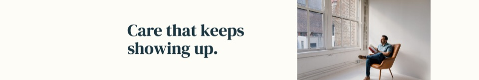
unifiedmedsMen’s health care, online and discreet.[Industry] · [City, State] · [0] followersFollowVisit website
HomeAboutPostsJobsLife
unifiedmeds[0] followers
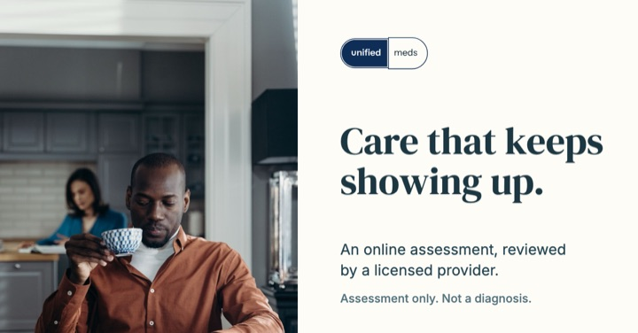
Desktop · linkedin.com · the cover shows whole; the logo covers its bottom left.
unifiedmedsMen’s health care, online and discreet.[0] followersFollowVisit website
HomeAboutPosts
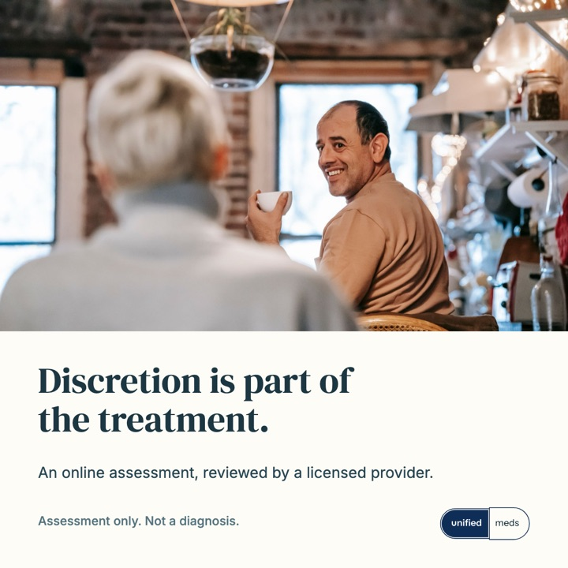
Phone · 390 wide · about the centre 900 of the cover shows.
Option B · graphic, colour-led
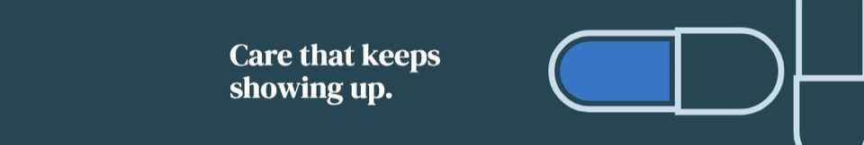
unifiedmedsMen’s health care, online and discreet.[Industry] · [City, State] · [0] followersFollowVisit website
HomeAboutPostsJobsLife
unifiedmeds[0] followers
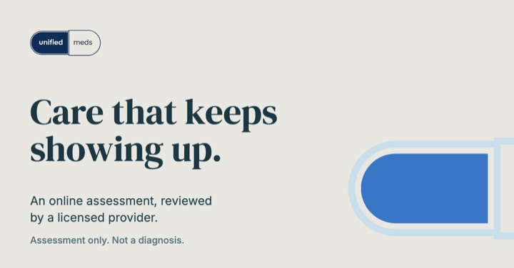
Desktop · linkedin.com · the cover shows whole; the logo covers its bottom left.
unifiedmedsMen’s health care, online and discreet.[0] followersFollowVisit website
HomeAboutPosts
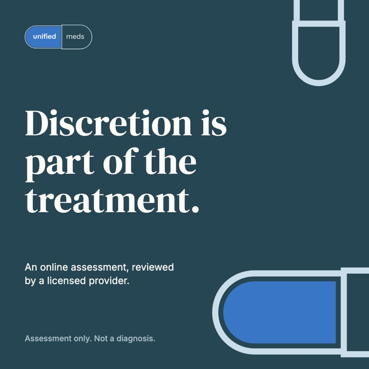
Phone · 390 wide · about the centre 900 of the cover shows.
The asset set.
Each block: use, exact size, safe zone (dashed overlay; switch it off to see the art) and Option A beside Option B. Coral marks what LinkedIn covers; the dotted blue box is the phone crop.
Company logo
The page’s face: a square with slightly rounded corners (not a circle), 200 px on the page, 48 to 72 px beside every post. The logo files as they are.
Size
400 × 400 px
Ratio
1:1, square
Type
PNG or JPG
Max file
8 MB [check]
Safe zone
Keep 40 px from the edges
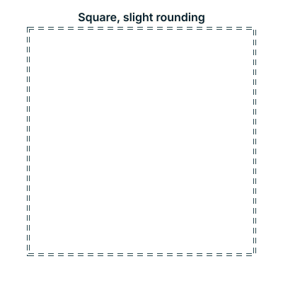
Option A · The “u|m” mark in Navy on Cream, the same art as every other channel’s profile picture. · PNG · SVG
Option B · The app icon, “u|m” on Navy (R-93): one avatar across all channels. · PNG · SVG
Cover
A thin strip: one line and a photo or two capsules. Nothing in the bottom left (the logo) and nothing important outside the centre 900 (the phone).
Size
1128 × 191 px
Ratio
about 5.9:1
Type
PNG or JPG
Max file
8 MB [check]
Safe zone
x 300 to 1014; keep the bottom left 250 × 95 clear
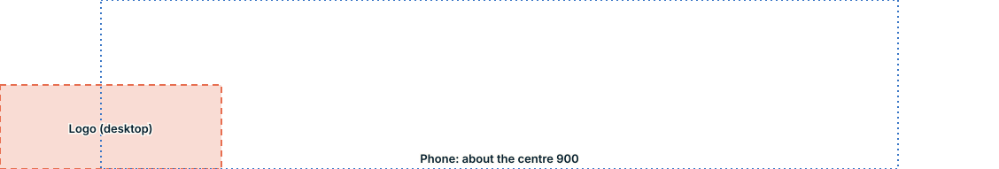
Option A · Paper, the line in DM Serif, a photo window inside the phone crop. · PNG · SVGOption B · Deep Teal, the line in Paper, a split capsule and an outline at the right. · PNG · SVG
Desktop · all 1128 × 191; the logo covers the bottom leftPhone · about the centre 900
Option A, both crops.
Desktop · all 1128 × 191; the logo covers the bottom leftPhone · about the centre 900
Option B, both crops.
Post image, square
The feed’s safest format: the same on desktop and phone. Headline, one plain line, the legal line when the assessment is offered.
Size
1200 × 1200 px
Ratio
1:1
Type
PNG or JPG
Max file
5 MB [check]
Safe zone
60 px from every edge
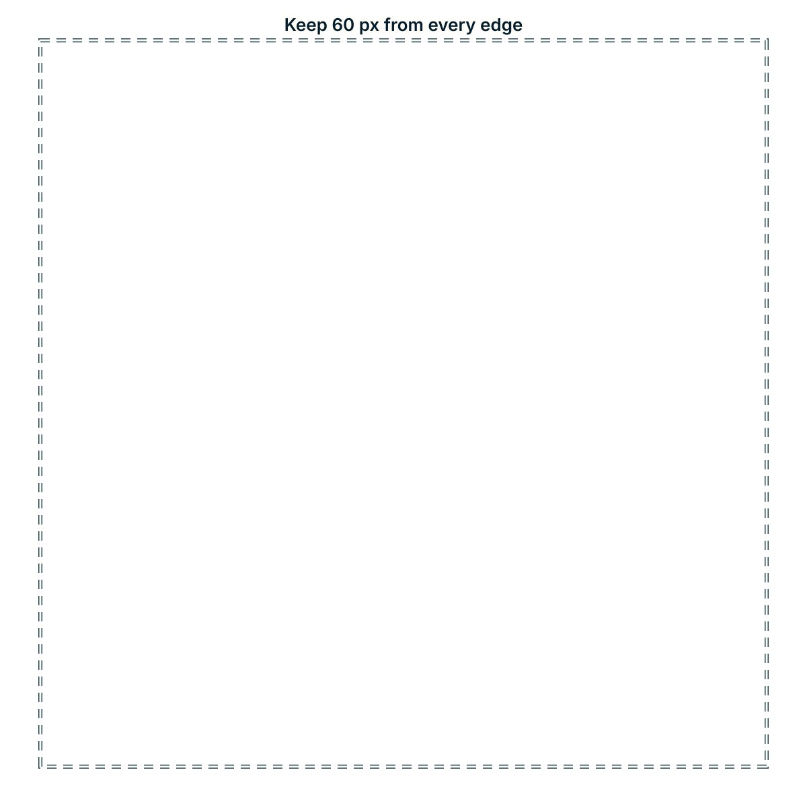
Option A · Photo on top, Paper panel with the headline below. · PNG · SVGOption B · Deep Teal, the headline at 120, two capsules at the edges. · PNG · SVG
Post image, wide
For a single image post and for link previews. On a phone it shows at about 360 pt wide, so the headline stays at 72 px or larger.
Size
1200 × 627 px
Ratio
1.91:1
Type
PNG or JPG
Max file
5 MB [check]
Safe zone
60 px from every edge
Option A · Photo on the left, Paper on the right. · PNG · SVGOption B · Mist, the headline large, one split capsule cropped by the corner. · PNG · SVG
Document post (PDF, 3 pages)
LinkedIn shows a PDF as swipeable pages in the feed. Three pages: the cover, two steps, the last step with the button and the legal line. Portrait pages fill most of a phone screen.
Size
1080 × 1350 px per page
Ratio
4:5
Type
PDF (PNG pages for reference)
Max file
100 MB, 300 pages [check]
Safe zone
90 px margin; page number bottom right
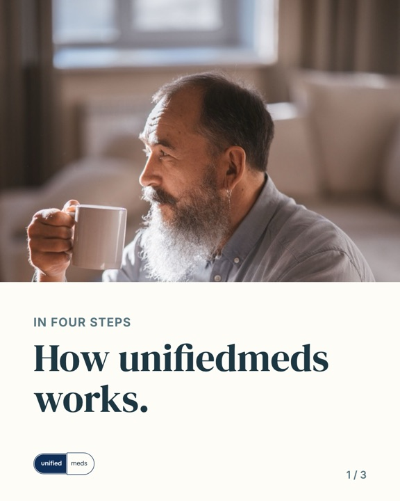
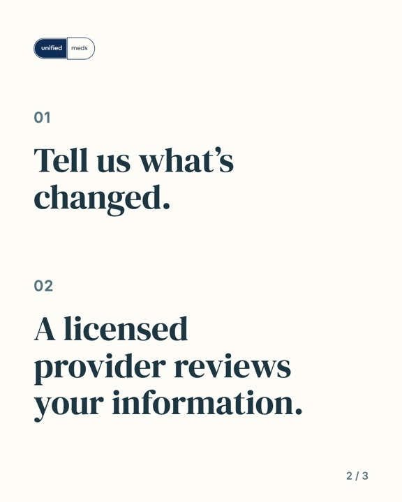
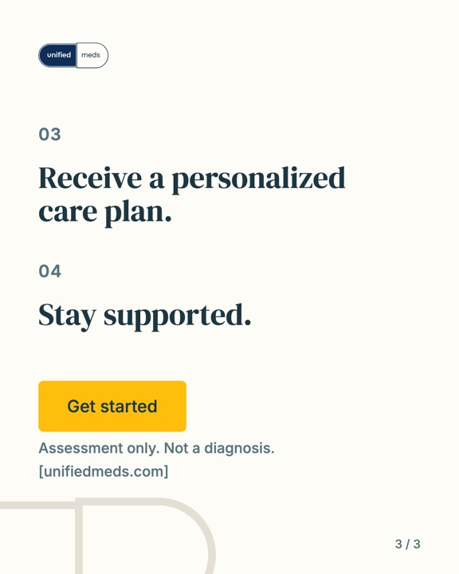
Option A · photo cover, Paper pages · PDF · PNG 1 · 2 · 3
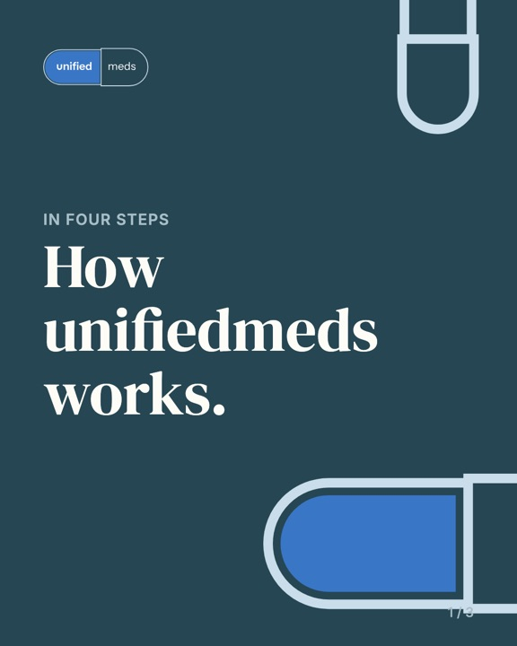
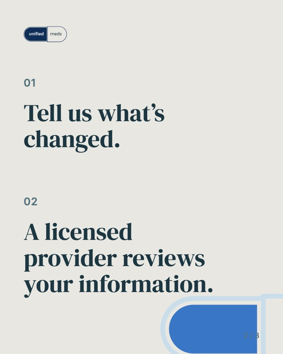
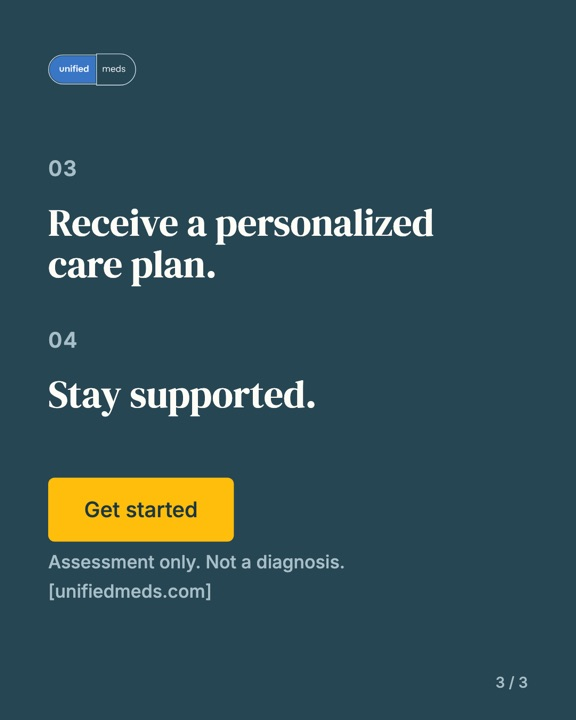
Option B · Deep Teal cover and close, a Mist page between · PDF · PNG 1 · 2 · 3
Careers (Life tab) image
The header of the Life tab, for people thinking of joining. Real team photos replace the placeholder once there is a team shoot.
Size
1128 × 376 px
Ratio
3:1
Type
PNG or JPG
Max file
8 MB [check]
Safe zone
Text in the left half
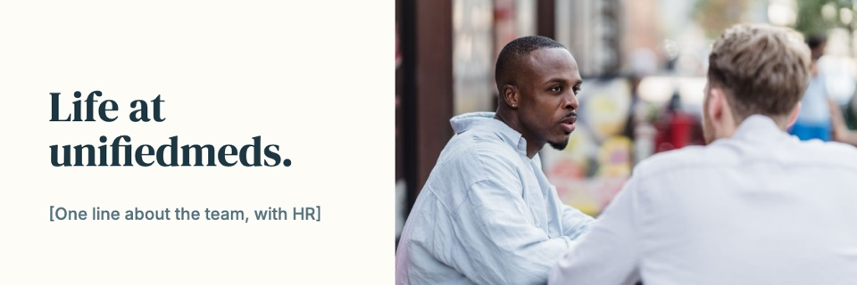
Option A · Paper panel, the title in DM Serif, a photo of people together. · PNG · SVG
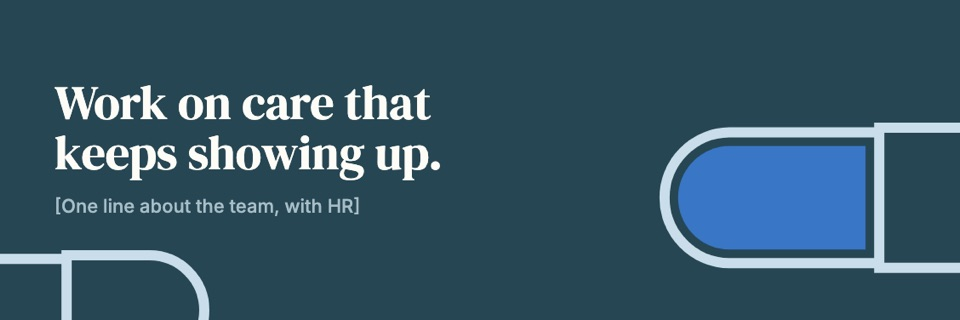
Option B · Deep Teal, the line large, two capsules. · PNG · SVG
Employee banner template
For team members who want to show where they work, on their own profile (optional, never required). Everything sits on the right, away from their photo.
Size
1584 × 396 px
Ratio
4:1
Type
PNG or JPG
Max file
8 MB [check]
Safe zone
x 600 to 1544; keep the left 520 × 226 clear
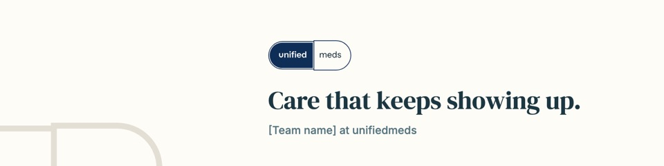
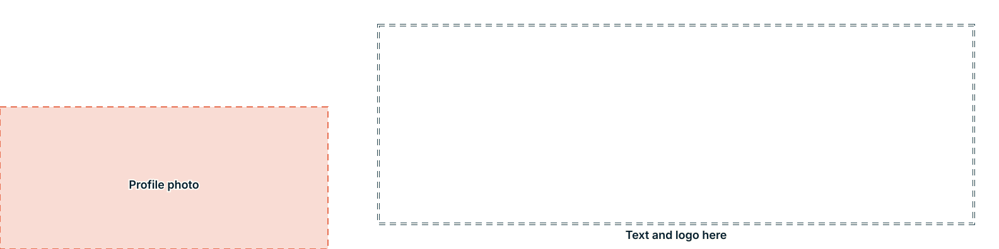
Option A · Paper, the seal, the line, a team name slot. · PNG · SVG
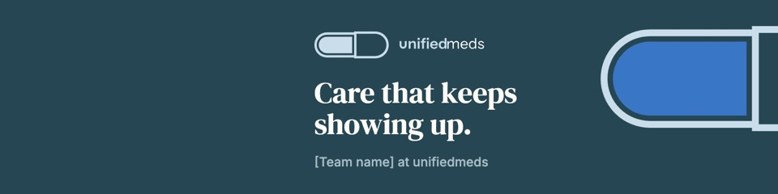
Option B · Deep Teal, the reversed horizontal logo, one split capsule. · PNG · SVG
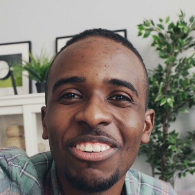
Desktop · the member’s photo covers the bottom left
Phone · the member’s photo covers the bottom left
Option A with a member’s photo.
Desktop · the member’s photo covers the bottom left
Phone · the member’s photo covers the bottom left
Option B with a member’s photo.
Mobile and desktop differences.
More than half of LinkedIn is read on a phone. Sizes are at the full file size.
Asset
Desktop
Mobile
Keep inside
Smallest readable type
Company logo
Square, 200 px on the page
Square, about 72 pt
40 px from the edges
Both options at any size
Cover
All 1128 × 191; logo over the bottom left
About the centre 900; logo over the bottom left
x 300 to 1014
Line 40 px or larger
Post, square
About 550 px wide
Full width, about 360 pt
60 px margin
Headline 72 px, body 30 px, legal 26 px
Post, wide
About 550 px wide
Full width, about 360 pt
60 px margin
Headline 72 px, body 28 px, legal 22 px
Document
Pages in a viewer, about 550 px wide
Swipeable, full width
90 px margin
Headline 92 px, body 40 px, legal 34 px
Life tab image
Whole
Whole, scaled down
Text in the left half
Title 56 px
Employee banner
Whole; photo bottom left
Whole; photo bottom left, larger
x 600 to 1544
Line 60 px
Captions and copy.
Plain, calm and specific. No prescription names in any social asset or caption, no result, no statistic. The legal line wherever the assessment is offered.
Tagline · option 1 (120 characters at most)Men’s health care, online and discreet.
39 characters.
Tagline · option 2Online assessments, read by licensed providers.
47 characters.
About · option 1 (2,000 characters at most)unifiedmeds is men’s health care, online. Members answer a few questions on their own time, a licensed provider reviews them, and the member decides what happens next. We build it to be private, plain and easy to come back to. Assessment only. Not a diagnosis.
260 characters.
About · option 2We are building a quieter kind of men’s health care: an online assessment, a licensed provider who reads it, and nothing loud in between. We hire people who care about getting the small things right. Assessment only. Not a diagnosis.
233 characters.
Post 1Discretion is part of the treatment.
At unifiedmeds, a member answers a few questions online and a licensed provider reviews them. Nothing about it needs to be loud.
Assessment only. Not a diagnosis.
#unifiedmeds #telehealth
Post 2How unifiedmeds works, in four steps. (Document post, 3 pages.)
01 Tell us what’s changed.
02 A licensed provider reviews your information.
03 Receive a personalized care plan.
04 Stay supported.
Assessment only. Not a diagnosis.
#unifiedmeds #menshealth
Post 3We are hiring. [Role], [location or remote].
If you care about care that keeps showing up, read the role here: [careers link].
#unifiedmeds #hiring
Hashtags and links
Two or three hashtags at the end: #unifiedmeds, then broad tags only. Never a condition, a medicine or a body part. Links go to the homepage or the careers page [O-01]; LinkedIn shows the first 210 characters before “see more”, so the point comes first.
Rules for this channel.
The cover keeps the bottom left clear for the logo, and everything that matters inside the centre 900 for the phone.
The logo is a square: never a circle crop, never the wordmark alone.
Posts lead with the point in the first 210 characters; no hook that teases a result.
Document posts are three to six pages, 4:5, one idea per page, the legal line on the last page.
Team members are never asked to use the employee banner, and never post about members or results.
Careers posts name the role and place, no promise about growth or pay that HR has not approved.
No medicine, result, statistic, testimonial or certification in a post or image until legal approves it (R-65, R-67).
Files.
PNG at the exact size, the SVG source (fonts from Google Fonts, photos embedded), the document as PDF and the safe-zone templates. Rebuild with python3 -I assets/social/linkedin/make.py.